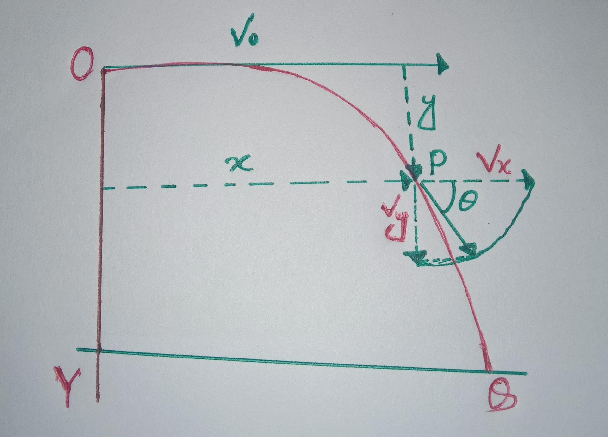

y0=V0sinΘ
1.Y=(tan Θ)X- {gX2/2u2cos2Θ}
এখানে tan Θ এবং g/2u2cos2Θ ধ্রুবক। তাই ধরী,tan Θ=b এবং 2u2cos2Θ=c।
তাইলে 1 নং সমীকরণটি দাড়য়ঃ
Y=bx-cx2
EQUEATION OF MOTION OF A HORIZONTAL PROJECTILE:

NOTE:
t সময় পরে আনুভূমিকের সমান্তরাল বরাবর বেগ vx=vo
এবং t সময় পরে আনুভূমিকের সাথে লম্ব বরাবর বেগ vy=vosinΘ
t সময় পর মোট বেগ=√vx2+vy2
আনুভূমিকের সাথে v এর কৌনিক ব্যবধান Θহলে---->
tanΘ={vy/vx}
আবার t সময় পরে x অক্ষ বরাবর দূরত্ব X=vot
আবার t সময় পরে y অক্ষ বরাবর দূরত্ব Y=1/2 g t2
t সময় পর সরণ= √X2+Y2
আনুভূমিকের সমান্তরাল প্রাসের ক্ষেত্রে সর্বাধিক আনুভূমিক পাল্লা R={vo√2h/g}
আনুভূমিকের সমান্তরাল প্রাসের ক্ষেত্রে বিচরনকাল T={√2h/g}
OTHER FORMULA:
-
V=dr/dt
-
a=dv/dt
-
a=d2x/dt2
-
v=vo+at
-
s={vo+v /2}×t
- s=vot+1/2 at2
-
v2=vo2+2as
-
sth=vo+{(2t-1)/2}×a
-
v=vo- gt
-
h={vo+v/2}×t
-
h=vot - 1/2 g t2
-
v2=vo2 - 2gh
-
hmax={vo2/2g}
-
tmax={vo / g}
-
T={vo / g}
-
tm={vosinΘ/g}
-
hm={(vosinΘ)2/2g}
-
T={(2vosinΘ)/g}
-
R={(vo2sin2Θ/g}
-
Rm={vo2/g}
-
s=rΘ
- ω=2π / T
- ω=2πN/t
- v=ωr
- a=αr
- a=α2r={v2/r}